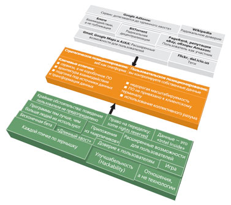

Мнения
Автор: Тим О’Рейли
Опубликовано 18 октября 2005
года
Крах доткомов осенью 2001 года стал для веба поворотным пунктом. Многие решили, что феномен веба был слишком раздут, хотя, на самом деле, "мыльные пузыри" и, как результат этого, падение акций - неизбежно сопутствуют всем технологическим революциям. Падение акций обычно происходит тогда, когда новая технология готова занять центральное место на сцене. На волне поднимаются и мошенники, и те, кто действительно добился успеха, - и в какой-то момент приходит понимание, чем первые отличаются от вторых.
Концепция Веба 2.0 родилась на совместном мозговом штурме издательства O’Reilly Media и компании MediaLive International. Веб-пионер и вице-президент O’Reilly Дейл Дагерти (Dale Dougherty) отметил, что сам-то веб далек от краха и даже более важен, чем раньше, раз уж впечатляющие новые приложения и сайты появляются с завидной регулярностью. Больше того, у фирм, переживших коллапс, было нечто общее. Может быть, в результате доткомовского краха имеет смысл говорить о Вебе 2.0. Мы решили, что так и есть. Так родилась Web 2.0 Conference.
За полтора года термин "Веб 2.0" прижился (более 9,5 млн. ссылок в Google). Но относительно того, что он обозначает, в товарищах согласья нет. Одни приняли новую концепцию, другие полагают, что это бессмысленный маркетинговый термин.
Я постараюсь объяснить, что мы имеем в виду, говоря о Веб 2.0.
На нашей первой встрече, мы определяли Веб 2.0, отталкиваясь от конкретных примеров.
Веб 1.0 |
Веб 2.0 |
mp3.com |
Napster |
Персональные сайты |
Блоги |
upcoming.org и EVDB |
|
Спекуляция доменными именами |
Поисковая оптимизация |
Оплата рекламы по количеству показов |
Оплата рекламы по количеству переходов |
Извлечение данных из HTML |
Веб-сервисы |
Публикация |
Соавторство |
Системы управления контентом (CMS) |
Wiki |
Каталоги (таксономия) |
Теги (фолксономия) |
Удержание пользователей |
Синдикация контента |
Список все увеличивался и увеличивался. Но почему одно приложение мы отнесли к Вебу 1.0, а второе - к категории Веб 2.0? (Это важный вопрос, поскольку Веб 2.0 стал настолько популярным, что многие компании используют сегодня этот термин в своем маркетинге, зачастую даже не понимая, что он означает. С другой стороны, этот вопрос не так уж прост, потому что множество падких на красивые термины стартапов не имеют никакого отношения к Вебу 2.0, тогда как отдельные приложения, которые мы считаем Вебом 2.0, даже веб-приложениями не являются - например, Napster и BitTorrent.)
Анализируя наиболее успешные проекты Веба 1.0 и самые интересные новые приложения, мы попытались выделить основные принципы Веба 2.0.
Как многие важные концепции, Веб 2.0 не имеет четких границ. Это, скорее, центр притяжения. Вы можете представить себе Веб 2.0 как множество правил и практических решений. Они объединены в некое подобие солнечной системы, состоящей из узлов, каждый из которых построен с учетом некоторых или всех описанных правил и находится на определенной дистанции от центра.

На рисунке показана карта Веба 2.0, созданная нами во время мозгового штурма на конференции FOO Camp. Ее нельзя назвать завершенной, но она иллюстрирует многие ключевые идеи Веба 2.0.
К примеру, на первой конференции Веб 2.0 в октябре 2004 мы с Джоном Баттелем (John Battelle) озвучили предварительный список правил в совместном выступлении, открывающем конференцию. И первое правило гласит: "Веб как платформа". Конечно, еще до нас об этом навзрыд говорил Netscape, сгоревший в жаркой битве с Microsoft. Больше того, две компании из нашего списка Веб 1.0 - Akamai и DoubleClick - также были среди первопроходцев, рассматривавших веб как платформу. Люди нечасто воспринимают эти компании как поставщиков веб-сервисов, но, на самом деле, демонстрация рекламы - это первый широко распространенный веб-сервис, первый широко распространенный "mash-up" (если использовать термин, завоевавший в последнее время популярность). Каждый баннер доставлялся пользователю в результате незаметной кооперации двух сайтов, совместно формирующих страницу для показа. Akamai также рассматривал сеть как платформу, и даже на более низком уровне: обеспечивая незаметное кэширование и построив сеть доставки контента, чтобы снизить нагрузку на сайты своих клиентов.
Последователи DoubleClick и Akamai не только использовали наработки этих компаний, но пошли дальше, глубже чувствуя истинную природу новой платформы. Обе компании можно считать пионерами Веб 2.0, хотя ниже мы увидим, как более полно реализовать возможности веба за счет использования новых подходов.
Давайте внимательно рассмотрим три примера, чтобы понять, чем, по сути, старые компании отличаются от новых.
Если Netscape был флагманом Веба 1.0, то Google, конечно, - общепризнанный флагман Веба 2.0. <…> Так что давайте сравним сами компании и их позиционирование.
Netscape твердил о "вебе как платформе" в терминах старой софтверной парадигмы: главным продуктом компании был веб-браузер (настольное приложение), и стратегия Netscape заключалась в использовании своего доминирующего положения на рынке браузеров для продвижения дорогостоящих серверных продуктов. Контроль над стандартами отображения контента и браузерных приложений мог, в теории, обеспечить Netscape такое же место, какое Microsoft завоевала на рынке ПК. Автомобили когда-то рекламировали как "безлошадные экипажи". Точно так же, отталкиваясь от знакомых концепций, Netscape продвигал "вебтоп" на место "десктопу", предполагая подпитывать вебтоп данными и приложениями от провайдеров контента (которые купят у Netscape серверы).
В итоге и веб-браузеры, и веб-серверы превратились в нечто обыденное, а акцент переместился "к вершине стека", к веб-сервисам.
Google, напротив, был веб-приложением от рождения. Это сервис, за доступ к которому прямо или косвенно платили пользователи. Ни одна из привычных ловушек старой софтверной индустрии ему была не страшна. Вместо запланированных релизов - постоянное улучшение продукта. Вместо лицензирования или продаж - просто использование. Нет нужды заботиться о портировании ПО на другие платформы - все, что нужно для запуска Google, - это расширяемый массив из обыкновенных ПК с запущенной открытой ОС да собственные приложения и утилиты, которых никто за пределами компании не увидит. Фактически стоимость ПО была пропорциональна масштабу и динамичности данных, с которыми оно помогало управляться.
Сервис Google это не сервер, хотя доставка сервиса обеспечивается массивом интернет-серверов, - и не браузер, хотя пользователь получает доступ к сервису именно через него. И это не прославленный поисковик, хранящий контент, позволяющий пользователю осуществлять поиск. Как и телефонный звонок, который случается не на концах телефонной линии, а в сети между ними, сервис Google осуществляется в пространстве между браузером, поисковиком и целевым сервером, на котором содержится искомое. Google - это посредник между пользователем и его/ее онлайновым опытом.
И хотя Google и Netscape - софтверные компании, очевидно, что Netscape принадлежит к миру Lotus, Microsoft, Oracle, SAP и прочих фирм, чьи истоки - в софтверной революции 80-х, тогда как Google и иже с ним - это интернет-приложения (как eBay, Napster и, чего уж там, DoubleClick и Akamai).
Как и Google, DoubleClick - это истинное дитя интернет-эры. Компания рассматривает ПО как услугу, умеет управлять данными и, как отмечено выше, предоставляла доступ к веб-сервисам задолго до того, как этот термин был придуман. Однако DoubleClick очень жестко ограничена своей бизнес-моделью. В 90-х считалось, что веб - это, прежде всего, публикация контента, а не взаимодействие; что правят бал не потребители, а рекламодатели; что размер имеет значение и Интернет, по большому счету, будет состоять из раскрученных веб-сайтов, чья популярность измерена MediaMetrix или другим веб-аудитором.
В результате DoubleClick с гордостью упоминает на собственном сайте о "более чем 2000 успешных установках" своего ПО. Yahoo! Search Marketing (ранее Overture) и Google AdSense в то же самое время обслуживают сотни тысяч рекламных площадок.
Overture и Google добились успеха, потому что поняли концепцию "длинного хвоста" (терминология Криса Андерсона) - "коллективной мощи маленьких сайтов, которые поставляют значимую часть контента". Предложение DoubleClick подразумевает подписание официального контракта, ограничивая рынок до нескольких тысяч крупных сайтов. Overture и Google отыскали способ размещения рекламного модуля практически на любой странице. Больше того, они предпочли рекламным форматам, ориентированным на издателей и агентства (баннеры, поп-апы), менее навязчивые, привязанные к контексту и дружелюбные к пользователю текстовые рекламные блоки.
Урок Веба 2.0: сделайте упор на пользовательские сервисы и алгоритмическую обработку данных, чтобы дотянуться до самых краешков веба, обращайте внимание не только на голову, но и на хвост. <…>
Неудивительно, что другие истории успеха Веба 2.0 демонстрируют нам примерно то же поведение. eBay разрешил единичные транзакции стоимостью в несколько долларов между физическими лицами, исполняя роль автоматического посредника. Napster (хотя и был закрыт из-за проблем с законом) построил свою сеть, не пытаясь создать общую централизованную базу данных, но спроектировав всю систему так, что каждый клиент становился также и сервером, способствуя тем самым росту сети. [Вообще говоря, закрыть Napster технически стало возможно только потому, что полностью от централизованности создателям сервиса отказаться не удалось. - Прим. ред.].
Как и DoubleClick, Akamai был оптимизирован для работы с головой, а не хвостом, ориентирован на центр, а не на окраины. Несмотря на то что сервис Akamai работал на благо тех, кто находился в конце "длинного хвоста", облегчая им доступ к популярным сайтам, деньги свои компания получала именно от сайтов.
BitTorrent, как другие пионеры P2P-движения, сделал следующий шаг к децентрализации Интернета. Каждый клиент является и сервером, файлы разбиваются на фрагменты, которые могут быть загружены из разных источников, незаметно принуждая пользователей предоставлять друг другу каналы и данные. Чем популярнее файл, тем быстрее он может быть доставлен, так как больше пользователей обеспечивает суммарную пропускную способность и больше фрагментов целого файла доступно в Сети.
Таким образом BitTorrent демонстрирует нам ключевой принцип Веб 2.0: чем больше людей использует сервис, тем автоматически он становится лучше. Если Akamai вынужден добавлять серверы для улучшения качества услуг, то каждый пользователь BitTorrent приходит на вечеринку со своими ресурсами. Это имплицитная "партнерская архитектура", встроенная этика кооперации, согласно которой сервис действует в первую очередь как разумный посредник, соединяющий края друг с другом и использующий для этого ресурсы самих пользователей.
В каждом из предыдущих эпизодов конкурентной борьбы Microsoft успешно разыгрывала карту платформы, перебивая ею самые популярные приложения. С помощью Windows Microsoft заменила Lotus 1-2-3 на Excel, WordPerfect - на Word, а Netscape Navigator - на Internet Explorer.
Однако на этот раз конфликт не между приложением и платформой. Это конфликт двух платформ, каждая из которых предлагает радикально отличную бизнес-модель. С одной стороны, единственный поставщик ПО с впечатляющей базой инсталляций, сильно интегрированной ОС и API, дающим контроль над парадигмой программирования. С другой стороны - система, у которой нет владельца, собранная вместе с помощью множества протоколов, открытых стандартов и соглашений о сотрудничестве.
Windows представляет собой апофеоз проприетарного контроля за программным API. Netscape пытался перехватить инициативу, используя те же техники, что и сама Microsoft использует против своих конкурентов, но проиграл. Однако Apache, основанный на открытых веб-стандартах, процветает. Когда платформа соревнуется с платформой и стоит вопрос о выборе платформы или, если копнуть глубже, о выборе архитектуры, о выборе бизнес-модели, то битва ведется на равных.
Windows была отличным
решением проблем ранней эпохи ПК. Она
разровняла игровое поле для разработчиков
приложений, решив множество проблем,
терзавших индустрию. Но единый рывок,
осуществленный силами единственного
поставщика, больше решением быть не может.
Он сам становится проблемой. Системы,
ориентированные на коммуникации, каковой
является Интернет-как-платформа, требуют
возможности взаимодействия на уровне
приложений. До тех пор пока поставщик не
контролирует оба конца каждого соединения,
его возможности по привязке пользователя с
помощью API ограничены.
Любой
поставщик решения для Веб 2.0, решивший ради
выгоды замкнуть собственное приложение на
себя путем контроля над платформой, по
определению не сможет воспользоваться ее
сильными сторонами.
Это я не к тому, что возможностей для закрытия ПО и создания конкурентных преимуществ больше нет, но мы верим, что они не заключаются в контроле над программным API и протоколами. Правила игры изменились. И добиться успеха в эпоху Веба 2.0 смогут те, кто принял новые правила, а не пытается использовать приемы, работавшие в эпоху программного обеспечения для ПК.
{kind=link}